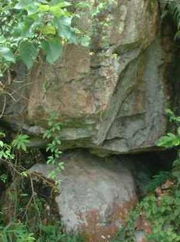
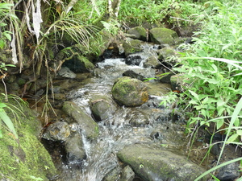
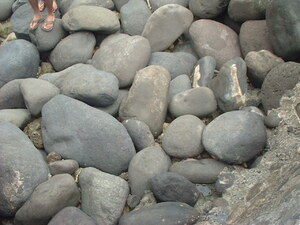
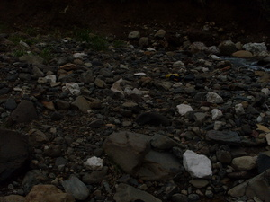

batu    
/batu/
n.
“rock”
n.
stone
Daruwa ne kalasi ka batu, ka maangkag wey meitem.
Two kinds of stone, the white stone and the black stone.
Wrd.Gloss: stone; rock
Eng. stone; rock; pebble
Tag. bató
Ceb. bato
Ilo.: bató
Tigwanon: batu
Binukid: batu
Cagayano: batu
Kinamigin: batu
Tagbawa: batu
Obo: batu
WBM: batu
Ilianen: batu
Dibabawon: batu
Cotabato Manobo: batu
Tasaday: batu
Sarangani: bato
Proto: batu
OCM: Ethnogeography (823), Topography and Geology (133)
DDP: Rock (1.2.2.2)
Online dict status: -
Usage level: B
adj.
(batuwen, -en) stony
Due lugar te Buhul ne amana ne batuwen.
There's a part of Bohol that has a lot of stone.
Eng. stony
OCM: Topography and Geology (133)
DDP: Rock (1.2.2.2)
Online dict status: -
Usage level: M
adj.
(batuwen, -en) grains mix with tiny stone when it drying
Keilangan ne eg-alaman te pad ka behas su batuwen.
We need to separate the tiny stone from the grains.
Eng. stony
OCM: Topography and Geology (133)
DDP: Rock (1.2.2.2)
Online dict status: -
Usage level: M
Updated by: RJH,AAA,QDL
Last updated: 03/Dec/2009
"igbatu" in text "Making Lead Sinkers"
"batu" in song "Maresen ne batu"
"batu" in song "Maresen ne batu"
"batu" in song "Te baggiyu paandilungan"
This page last updated: 28-Dec-2019
Copyright © 2009-2014, Matigsalug Language Christian Association, Inc